14 липня 2016р.
Суддя Київського апеляційного господарського суду Гарник Людмила Леонідівна не підтвердила можливість здійснювати правосуддя у відповідному суді під час первинного кваліфікаційного оцінювання Вищою кваліфікаційною комісією суддів України в травні цього року.
"Комісія відсторонила її від здійснення правосуддя та направила до Національної школи суддів України для проходження перепідготовки, яка триватиме до 18 листопада 2016 року. При перепідготовці враховуватиметься спеціалізація та інстанційність суду, а також результати первинного кваліфікаційного оцінювання Людмили Гарник. Після навчання на суддю очікує повторне оцінювання".
Кар'єру судді Людмила Леонідівна розпочала в 2000р., коли стала суддею Господарського суду Одеської області.
Під час проходження первинного оцінювання, багато питань у членів Комісії виникло щодо майна судді. Ми ж розібралися в деяких з них більш детально.
Отже, суддя Київського апеляційного господарського суду Гарник Людмила Леонідівна у своїй декларації за 2013р. вказала майже 233тис.грн. доходів, з яких 220тис.грн. - її заробітна плата, 12,6тис.грн. - матеріальна допомога. Тобто, як бачимо, живе пані Гарник також практично на одну заробітну плату судді :)
Має з 2013р. Людмила Леонідівна у власності задекларовані 2/3 київської квартири на 106,7м² у новому будинку на проспекті Лобановського (Червонозоряний), ціна на сьогодні якої складає близько 150тис.$ (3,7млн.грн.) або майже її 17 річних заробітних плат станом на 2013р.
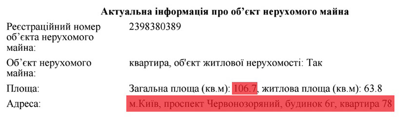
А от далі у нас постає питання: в її декларації за 2013р. вказана ще одна квартира площею 114м², але ми в реєстрі прав власності на нерухоме майно знайшли... дві квартири, які належать їй :) Обидві знаходяться в Одесі: перша - в елітному районі на Французькому бульварі (володіє з 2012р.), ще одна - на вулиці академіка Філатова (з 2009р.)
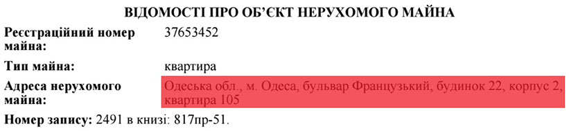
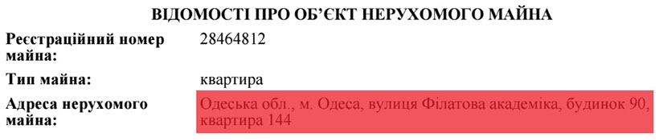
Ми перевірили будинки за цими адресами і можемо з впевненістю сказати, що квартира площею 114м² знаходиться в новому будинку на Французькому бульварі. Коштує вона недешево, з такою площею - близько 160тис.$ (майже 4млн.грн., ну або 18 річних заробітних плат пані Гарник).
.jpg)
.jpg)
.jpg)
1 - 3
<
>
Квартира ж на вул. академіка Філатова значно дешевша, до 1млн.грн. (40тис.$). Але виходить, що суддя Гарник не вказала її у своїй декларації за 2013р.? Мабуть мова йде просто про чергову "помилку"? :)
Також з 2013р. має суддя Гарник і 12 соток в елітному котеджному містечку під Одесою "Совіньйон" разом з житловим будинком на 335м² в 150м. від узбережжя Чорного моря.
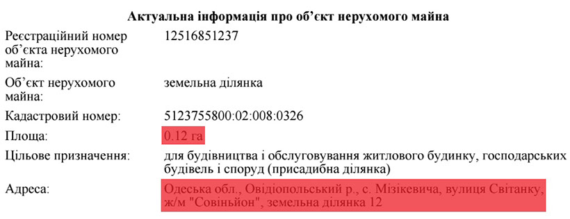
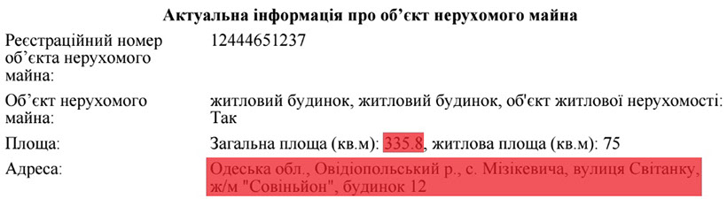
Ми знайшли даний маєток і відзняли його з повітря. Місце дійсно просто шикарне. За нашою інформацією, його актуальна ціна на сьогодні складає мінімум 500тис.$ (майже 12,5млн.грн. або 57 річних заробітних плат Гарник).
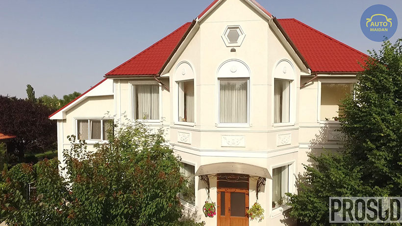
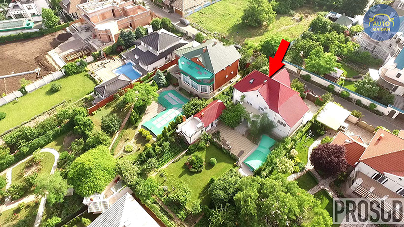
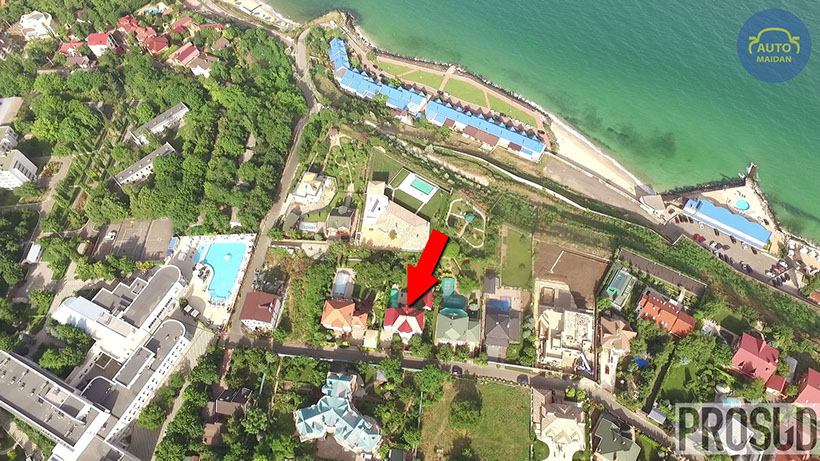
2 - 3
<
>
На нашому відео про життя суддів київських апеляційних судів він у третій частині.
Має також Людмила Леонідівна і чималі суми коштів на своїх банківських рахунках. У тому ж таки 2013р. вона поклала на рахунки 4млн.562тис.грн.(!) Звідки такі кошти у судді? Пояснити Гарник так і не змогла під час проходження нею первинного кваліфікаційного оцінювання. Членам Комісії вона відповіла, що швидше за все мова йде про "помилку". Ось ця "помилка" в її декларації.
Автопарк судді Гарник складається з Mercedes-Benz S 350 2009р.
Якщо ж підсумувати вартість всього майна судді Київського апеляційного господарського суду Гарник Людмила Леонідівна та її банківські вклади станом на 2013р., то вийде достатньо кругленька сума - 24,5млн.грн. або 111 її річних заробітних плат.
Але є у Людмили Леонідівни також ще й заможний... батько - Кирплюк Леонід Болеславович (Кирплюк - її дівоче прізвище), що також має трикімнатну квартиру в центрі Одеси, в Приморському районі, прямо біля Привокзальної площі.
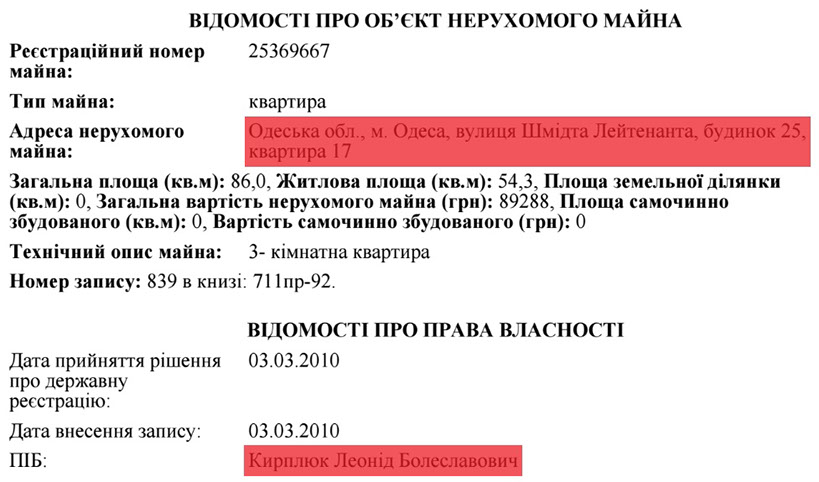
До речі, оцінили дану квартиру в 2010р. дуууже скромно, практично в 90тис.грн., насправді ж її ціна близько 80 тисяч, але доларів США, тобто майже 2млн.грн. :)
Має Леонід Болеславович також і чималу квартиру в центрі Києва площею майже в 130м²(!) на вулиці Шота Руставелі. Сьогоднішня вартість подібних квартир стартує від просто захмарних 280тис.$(!) (майже 7млн.грн.) Але він її не купував, йому цю квартиру... "подарували" у тому ж таки 2013 році :)))
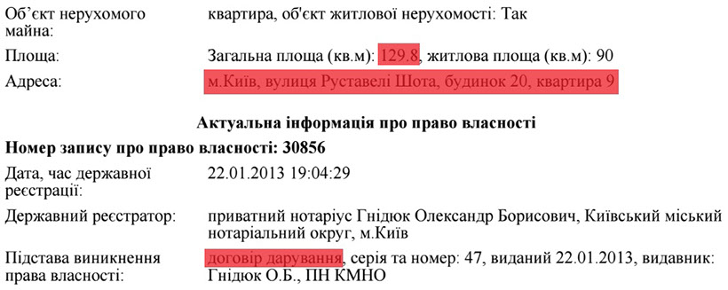
Має суддя Гарник ще й сина Гарника Кирила Юрійовича, який працює... теж суддею, але в Окружному адміністративному суді міста Києва, хоча змолоду він і починав кар'єру... співака :) Навіть брав участь у 2004р. в російському проекті "Фабрика зірок 5".
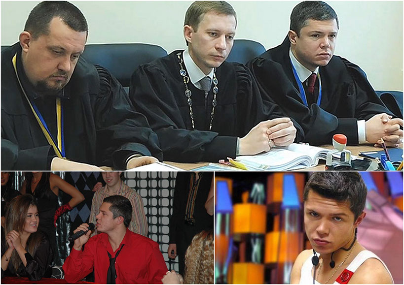
Але все ж таки вирішив заробляти мільйони на ниві судочинства, ну майже мільйони.
У своїй декларації за 2013р. Кирило Юрійович вказав 171,5тис.грн. сукупного доходу, з яких майже 123тис.грн. - його заробітна плата. Річний дохід його дружини не зазначено в декларації.
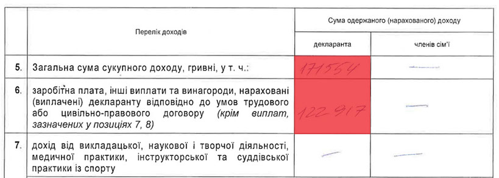
У той же час суддя Кирило Гарник (станом на 2013р.) на своїх банківських рахунках мав майже 900тис.грн. та недешеве авто AUDI 2.0 2012р., яке придбав у тому ж році за 480тис.грн. (60тис.$ за курсом 8)
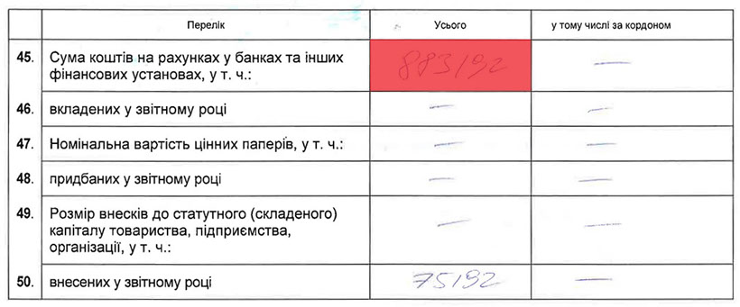
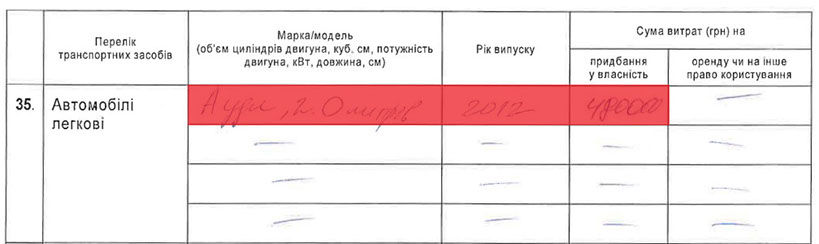
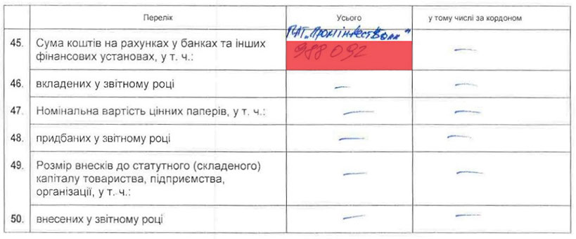
До речі, маленьке уточнення: саме цей суддя Окружного адміністративного суду міста Києва Кирило Гарник у липні 2013р. забороняв акції протесту біля Києво-Печерської Лаври, Володимирської гірки та Софійської площі проти приїзду до України на святкування 1025-річчя хрещення Русі патріарха Кирила та президента Росії Володимира Путіна.
Дружина ж Кирила Юрійовича, Гарник Марія, яка в 2013р. (відповідно до декларації свого чоловіка) не мала доходів та жодної копійки на своїх банківських рахунках, в кінці того ж року придбала також недешеве авто і також німецької марки - AUDI Q5 2.0 2013р., яке на той час коштувало від 50тис.$ (400тис.грн.)
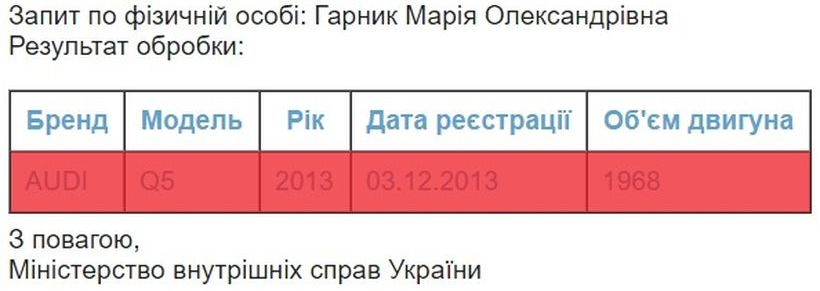
Дана інформація буде нами офіційно передана до Національного антикорупційного бюро України, Національного агентства з питань запобігання корупції, Вищої кваліфікаційної комісії суддів України та Вищої ради юстиції. PROSUD
Суддя Київського апеляційного господарського суду Гарник Людмила Леонідівна. Розслідування «PROSUD».
Copyright © 2016 PROSUD